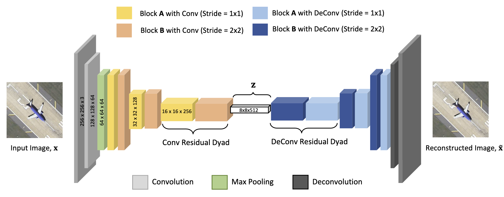
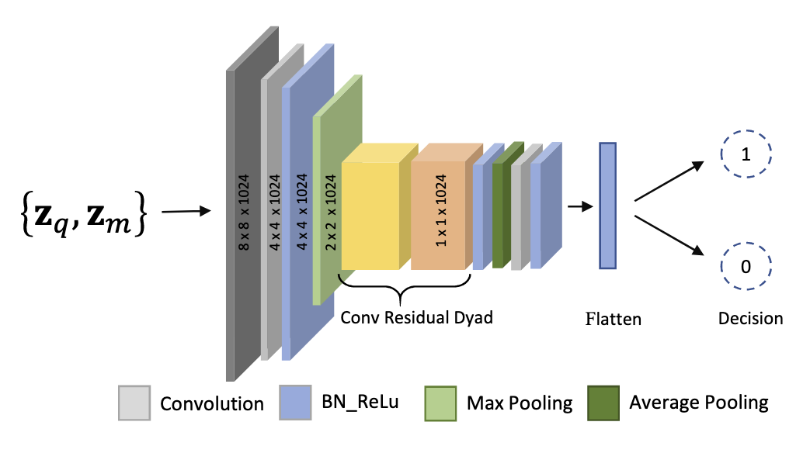

Computer Vision and Graphics Lab1 Department of Computer Science Lahore School of Management Sciences Lahore, Pakistan
Visual Computing Lab2 Faculty of Science University of Ontario Institute of Technology 2000 Simcoe St. N., Oshawa ON L1G 0C5
Abstract
We propose a new method for remote sensing image matching. The
proposed method uses encoder subnetwork of an autoencoder pre-trained on
GTCrossView data to construct image features. A discriminator network
trained on University of California Merced Land Use/Land Cover dataset
(LandUse) and High-resolution Satellite Scene dataset (SatScene)
computes a match score between a pair of computed image features. We
also propose a new network unit, called residual-dyad, and empirically
demonstrate that networks that use residual-dyad units outperform those
that do not. We compare our approach with both traditional and more
recent learning-based schemes on LandUse and SatScene datasets, and the
proposed method achieves state-of-the-art result in terms of mean
average precision and ANMRR metrics. Specifically, our method achieves
an overall improvement in performance of 11.26% and 22.41%,
respectively, for LandUse and SatScene benchmark datasets.

Unsupervised Autoencoder Features: Image input from left (to encoder
sub-network) and outputs to the right of (decoder) network. z is taken
as the feature vector of the given image.

Network architecture of the proposed ResDyadDML that takes features from
ResDyadAE for an image pair and predicts the matching score.
Residual-dyad block has been integrated to boost the performance of the
network.
{kind=link}
{kind=link}
{kind=link}
{kind=link}
{kind=link}
{kind=link}